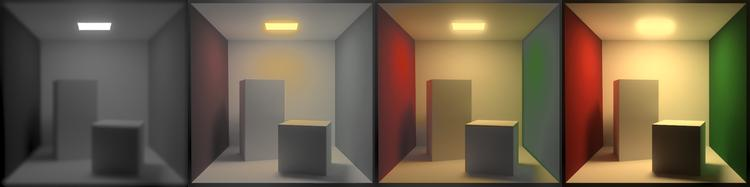

"artefact-metadata-hxa7241-www": {
"title": "P3 Tonemapper",
"author": "Harrison Ainsworth",
"date": "2007-06-26",
"id": "urn:uuid:2F66180A-37CF-4F82-9677-D3F985FC8BA3",
"type": "article",
"subtype": "text/html",
"wordcount": 772,
"hashsecure": "sha256:267604948059d66fP3 Tonemapper
a tone-mapper open-source component for high-quality rendering
Description
P3 Tonemapper transforms a high-dynamic-range image into a low-dynamic-range image, in an automated way, sensitive to human perception. It produces natural-looking and realistic results.
It is in two parts: a command line application, and a dynamic library for programmatic use. Supported platforms are Windows and Linux (and maybe Mac one day).
Images are RGB, with exact colorspace specifiable. OpenEXR and Radiance RGBE files are readable, and PNG and PPM files are writeable to 16bit precision.
The essential algorithm is from 📄 ‘A Visibility Matching Tone Reproduction Operator’ by Ward Larson. It produces good results, accounts for human perceptual limitations, and is highly automatic. Others could be added.
Full ISO-98 C++ source code is available, under LGPL license. It is carefully organized, commented, with wide unit-test coverage. Overall high-level technical design documentation is included.
Images

Church interior, ideal tone mapping
(63 KiB)
|

Church interior, human tone mapping
(57 KiB)
|

Tree, ideal tone mapping
(97 KiB)
|

Tree, human tone mapping
(81 KiB)
|
The human tone-mappings show the effects of glare: emphasising brightness locally, and reducing contrast more widely.
| Bathroom interior, human tone-mapping, from dark to light in scaling multiples of 10 | ||||
|---|---|---|---|---|

(11 KiB)
|

(12 KiB)
|

(15 KiB)
|

(19 KiB)
|

(26 KiB)
|
These show the effects of darkness: reducing spatial acuity, color sensitivity and contrast sensitivity.
HDR source images from Greg Ward Larson.

... and a Cornell Box across a range of brightness with human tone-maps.
Technique
core
Humans judge brightness mostly comparatively. This allows flexibility in squashing real luminance ranges into display images. The Ward Larson technique uses a histogram to do this. One range is squashed into the other, but different sub-ranges are squashed differently, according to population in the original image.
A histogram of the original image brightness is made, then integrated. The resulting graph is a mapping of original brightness (x axis) to display brightness (y axis). Sub-ranges of luminance that have more representation in the original produce a larger gradient in the graph, so occupy a larger sub-range of display values.
It follows human vision in adapting to the most popular light level, while still covering much of the rest.
perceptual
glare
(bloom not flare) Eye materials scatter a small proportion of light widely over the sensors. This is simulated with a very wide weak filter. The result is reduced contrast overall, and obvious spreading of bright areas onto darker areas.
contrast sensitivity
Absolute brightness differences are less visible in darkness. This is simulated by clamping the histogram according to luminance. The result is a more gloomy image.
color sensitivity
Color is less visible in darkness. This is simulated by interpolating pixel values to grey according to luminance. The result is a desaturated/mono image.
spatial acuity
Sharpness is reduced in darkness. This is simulated by locally filtering according to luminance. The result is a blurry image.
Usage
application
The general form is:
p3tonemapper [options] [-x:CommandFilePathName] imageFilePathName
The simplest example ignores human perceptual limitations, and produces consistently good results:
p3tonemapper somerendering.exr
The next simplest simulates all human limitations, but requires that the input image holds proper cd/m2 luminance values (or includes a calibrating scale factor). A scale factor can be given with the -is option:
p3tonemapper -m1:h -is:1000_0 anotherimage.hdr
There are options to control:
- input RGB chromaticities
- input pixel scaling and offset
- input view frustrum angle
- glare and acuity and color sensitivity on/off
- output display luminance range
- output gamma transform
- output bit depth
Dynamic libraries for OpenEXR and PNG must be present to use those formats.
library
The library has a C interface defined in two header files. For Windows, there is an import library to link with, or it can be accessed purely dynamically.
The core interface follows an object pattern, in three parts: construction and destruction, commands to set options, and queries to operate on data. Overlayed on that is a simpler, more typed, interface, so an image may be tonemapped with a single function call.
Currently it takes the HDR image as an array of float triples, and writes the tonemapped image to an array of byte or word triples.
Downloads
Version 1.2 (2007-06-26)
| 💻 p3tonemapper12exe-win.zip | application and library - Windows (199 KiB) |
| 🐧 p3tonemapper12exe-linux.tar.gz | application and library - Linux (x86) (102 KiB) |
| 📦 p3tonemapper12src.zip | source code (266 KiB) |
Others
Related open-source tools: